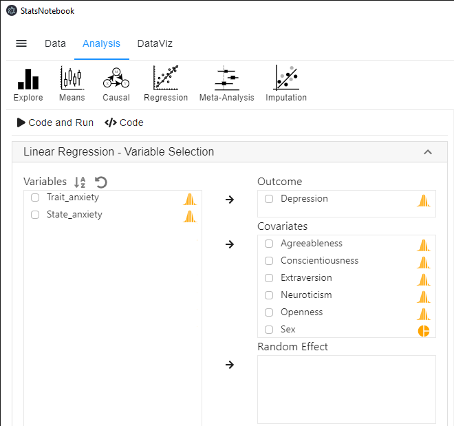

Linear regression is a technique for examining the relationship between a dependent variable (outcome) and a set of independent variables (predictors). This tutorial demonstrates how to conduct a linear regression in StatsNotebook using the following example. We will also provide an example write-up in APA styles.
In this setup, the dependent variable is depression, the independent variables are Agreeableness, Conscientiousness, Extraversion, Neuroticism, Openness and sex.
We will firstly show the R codes for this analysis below, and will provide a step-by-step guide on how to complete this analysis. We use the built-in Personality dataset in this example. This dataset can be loaded into StatsNotebook using instruction here or can be downloaded from here.
"Linear regression"
res <- lm(Depression ~ Agreeableness + Conscientiousness + Extraversion + Neuroticism + Openness + Sex,
data=currentDataset)
summary(res)
cbind(coef(res), confint(res, level = 0.95))
library(car)
res.std <- rstandard(res)
plot(res.std, ylab="Standardized Residuals")
"Outlier Test. Observations with a Bonferroni p < .01 might be considered as outliers and might need further investigation."
outlierTest(res)
infIndexPlot(res)
"Residual plots, curvature tests and normality plot"
residualPlots(res)
ggplot(as.data.frame(res.std), aes(sample = res.std)) +
geom_qq() +
geom_qq_line()
"Variance inflation factor (VIF >=5 indicates high level of multicollinearity)"
vif(res)
"Chan, G. and StatsNotebook Team (2020). StatsNotebook. (Version 0.1.0) [Computer Software]. Retrieved from https://www.statsnotebook.io"
"R Core Team (2020). The R Project for Statistical Computing. [Computer software]. Retrieved from https://r-project.org"
Prior to running the linear regression analysis, it is always a good practice to visualise the data and conduct descriptive analysis.
To run a linear regression,

The followings are from the top section of the generated codes.
res <- lm(Depression ~ Agreeableness + Conscientiousness + Extraversion + Neuroticism + Openness + Sex,
data=currentDataset)
summary(res)
cbind(coef(res), confint(res, level = 0.95))
These codes tell R to run a linear regression using the lm function. The left side of the “~” symbol specifies the dependent variable; the right side specifies the independent variables. The results from this regression analysis is then printed out using the summary function. Lastly, the cbind, coef and confint functions are used to print the model coefficients with the corresponding 95% confidence intervals.
These codes produce the below model summary.
######################################################
Call:
lm(formula = Depression ~ Agreeableness + Conscientiousness +
Extraversion + Neuroticism + Openness + Sex, data = currentDataset)
Residuals:
Min 1Q Median 3Q Max
-10.3954 -3.5621 -0.5515 2.1011 18.2826
Coefficients:
Estimate Std. Error t value Pr(>|t|)
(Intercept) 7.98352 3.57490 2.233 0.0270 *
Agreeableness -0.01498 0.02859 -0.524 0.6011
Conscientiousness -0.01702 0.02231 -0.763 0.4467
Extraversion -0.02104 0.01839 -1.144 0.2546
Neuroticism 0.14296 0.01891 7.559 3.94e-12 ***
Openness -0.05455 0.02454 -2.222 0.0278 *
SexMale -0.87264 0.88739 -0.983 0.3270
---
Signif. codes: 0 '***' 0.001 '**' 0.01 '*' 0.05 '.' 0.1 ' ' 1
Residual standard error: 5.091 on 148 degrees of freedom
(76 observations deleted due to missingness)
Multiple R-squared: 0.3319, Adjusted R-squared: 0.3048
F-statistic: 12.26 on 6 and 148 DF, p-value: 3.608e-11
######################################################
2.5 % 97.5 %
(Intercept) 7.98352411 0.91909104 15.047957174
Agreeableness -0.01497977 -0.07148527 0.041525721
Conscientiousness -0.01701989 -0.06110049 0.027060703
Extraversion -0.02103749 -0.05738767 0.015312701
Neuroticism 0.14295833 0.10558358 0.180333083
Openness -0.05454570 -0.10304908 -0.006042319
SexMale -0.87264011 -2.62623258 0.880952360
######################################################
The R-sq indicates that the model explains 33.19% of variance in depression. It should be noted that 76 observations have missing data and thus are removed. See Regression with missing data to more appropriately handle the missing data in this analysis.
Residual standard error: 5.091 on 148 degrees of freedom
(76 observations deleted due to missingness)
Multiple R-squared: 0.3319, Adjusted R-squared: 0.3048
F-statistic: 12.26 on 6 and 148 DF, p-value: 3.608e-11
The model coefficients are shown in the section below.
The p-value provides an indication of level of evidence against a null effect (i.e. zero association) for each of the variables. Traditionally, a p-value under 0.05 represents a statistically significant finding. It should be noted that there are debates on how the p-value should be used, and conclusion should not be solely relied on the p-value.
There is evidence that higher level of neuroticism is associated with higher level of depression. The coefficient of neuroticism is 0.14, indicating that one unit increase in neuroticism is associated with 0.14 unit decrease in depression. The result also shows that higher level of openness is associated with lower level of depression. The coefficient of openness is -0.05, indicating that one unit increase in openness is associated with 0.05 unit decrease in depression. The other three traits, agreeableness, conscientiousness and extraversion are not significantly associated with depression. The estimated coefficients are very close to zero.
Using a significance level of 0.05, we conclude that openness and neuroticism are significantly associated with depression, but agreeableness, conscientiousness and extraversion are not. Males on average have 0.87 unit lower in depression than female, but the effect is not statistically significant.
Coefficients:
Estimate Std. Error t value Pr(>|t|)
(Intercept) 7.98352 3.57490 2.233 0.0270 *
Agreeableness -0.01498 0.02859 -0.524 0.6011
Conscientiousness -0.01702 0.02231 -0.763 0.4467
Extraversion -0.02104 0.01839 -1.144 0.2546
Neuroticism 0.14296 0.01891 7.559 3.94e-12 ***
Openness -0.05455 0.02454 -2.222 0.0278 *
SexMale -0.87264 0.88739 -0.983 0.3270
---
Signif. codes: 0 '***' 0.001 '**' 0.01 '*' 0.05 '.' 0.1 ' ' 1
Emphasis should be placed on the 95% confidence interval of these coefficients because statistical significance provides no information about the effect size. From this analysis, we are 95% confident that the effect of neuroticism on depression is between 0.11 and 0.18. The 95% confidence interval for openness is (-0.103, -0.006). Thus the effect of openness could be close to zero because one end of the confidence interval (the upper end in this case).
2.5 % 97.5 %
(Intercept) 7.98352411 0.91909104 15.047957174
Agreeableness -0.01497977 -0.07148527 0.041525721
Conscientiousness -0.01701989 -0.06110049 0.027060703
Extraversion -0.02103749 -0.05738767 0.015312701
Neuroticism 0.14295833 0.10558358 0.180333083
Openness -0.05454570 -0.10304908 -0.006042319
SexMale -0.87264011 -2.62623258 0.880952360
To evaluate the validity of the above results, we will need to check if the assumptions of linear regression is satisfied. There are four key assumptions of linear regression.
The independence assumption can be ensured if the sample is a random sample. When there is dependency in the data, other statistical methods, such as Linear mixed model can be used.
In addition, we also need to check of multicollinearity, outliers and/or influential observations (i.e. observations that may have large impact on the model coefficients).
To check the other three assumptions (i.e. Linearity, homoscedasticity and normality) and perform model diagnostic, we will need to use several functions from the car library. To load this library, we use the following code.
library(car)
The following two lines of codes are used to generate a residual plot.
res.std <- rstandard(res)
plot(res.std, ylab="Standardized Residuals")
All the points should be randomly scattered around 0, with approximately 95% of the points fall betweem -2 and 2 standardized residuals. Points with a large standardized residual might be outliers.
The following lines of codes allow us to examine if there are outliers and if there are any observations that might have large influence on the model estimates.
"Outlier Test. Observations with a Bonferroni p < .01 might be considered as outliers and might need further investigation."
outlierTest(res)
infIndexPlot(res)
These codes firstly produce results from an outlier test. While there is no clear guideline on the cut-off, observations with a Bonferroni p < .01 might need further investigation. For example, these observations will need to be checked for errors. Researchers can also perform sensitivity analyses with these observations removed and compare the results from the full analysis.
######################################################
[1] "Outlier Test. Observations with a Bonferroni p < .01 might be considered as outliers and might need further investigation."
######################################################
rstudent unadjusted p-value Bonferroni p
76 3.824964 0.00019277 0.029879
66 3.722572 0.00028023 0.043436
######################################################
The following plot is produced by the infIndexPlot function. We focus on the top panel on Cook’s distance. Observations with a Cook’s distance close to 1 indicates high impact on the model coefficients. There is no influence observation in this analysis despite the existance of two observations with large residuals.
The following codes are used to produce more diagnostic plots and a normality plot.
"Residual plots, curvature tests and normality plot"
residualPlots(res)
ggplot(as.data.frame(res.std), aes(sample = res.std)) +
geom_qq() +
geom_qq_line()
Below is a set of diagnostic plots.
The residuals are plotted against each of the indepedent variables and the fitted values. Ideally, points on these plots need to be randomly scattered around 0. Any non-linear pattern (e.g. curvature) in the residual plots indicate that the linearity assumption is violated. A fanning in or fanning out pattern indicates the homoscedasticity assumption is violated. Examples of residual plots that demonstrate violation of the linearity assumption and homoscedasticity assumption can be found here.
The following is the results from curvature tests for each of the variables. A quadratic term is added to each of the plots and a curvature test tests if the quadratic term is zero. A test with a p-value < .01 may indicate the present of a non-linear trend (U-shape or inverted U-shape).
Test stat Pr(>|Test stat|)
Agreeableness -1.0679 0.28730
Conscientiousness -0.0964 0.92332
Extraversion 1.5893 0.11414
Neuroticism 1.8781 0.06235 .
Openness 0.7340 0.46410
Sex
Tukey test 1.7834 0.07452 .
---
Signif. codes: 0 '***' 0.001 '**' 0.01 '*' 0.05 '.' 0.1 ' ' 1
Below is a normality plot. If the residual is normally distributed, the points need to be follow the straight line. In this case, there is evidence that the normality assumption is violated. When the normality assumption is violated, we can try log-transformation of the dependent variable or use other analytic methods such as robust regression to evaluate if the violation has substantial impact on the model estimates.
Lastly, the following codes compute the Variance Inflation Factor (VIF).
"Variance inflation factor (VIF >=5 indicates high level of multicollinearity)"
vif(res)
A VIF over 5 indicates high level of multicollinearity. In this analysis, multicollinearity is not a concern as all the VIFs are small.
Agreeableness Conscientiousness Extraversion Neuroticism
1.726463 1.467871 1.466692 1.176284
Openness Sex
1.535307 1.117182
Table 1. Results from linear regression.
| Variables | b | 95% CI | p |
|---|---|---|---|
| Agreeableness | -0.01 | (-0.07, 0.04) | 0.601 |
| Conscientiousness | -0.02 | (-0.06, 0.03) | 0.447 |
| Extraversion | -0.02 | (-0.06, 0.01) | 0.255 |
| Neuroticism | 0.14 | (0.11, 0.18) | < .001 |
| Openness | -0.05 | (-0.10, -0.01) | .028 |
| Sex (Ref: Female) | |||
| Male | -0.87 | (-2.62, 0.88) | 0.327 |
Linear regression is used to examine the association between depression and agreeableness, conscientiousness, extraversion, neuroticism, openness and sex. Reults are shown in Table 1. Using a significance level of 0.05, results indicate that higher neuroticism (b = 0.14, 95% CI [0.11, 0.18], p < .001) and lower openness (b = -0.05, 95% CI [-0.10, -0.01], p = .028) are associated with depression. Other variables are not significantly associated with depression, and their effects are close to zero. Overall, the model explains 33.19% of variance in depression.
Chan, G. and StatsNotebook Team (2020). StatsNotebook. [Computer Software]. Retrieved from https://www.statsnotebook.io
Chan, G (2020). Linear regression. Retrieved from https://www.statsnotebook.io/blog/analysis/regression/